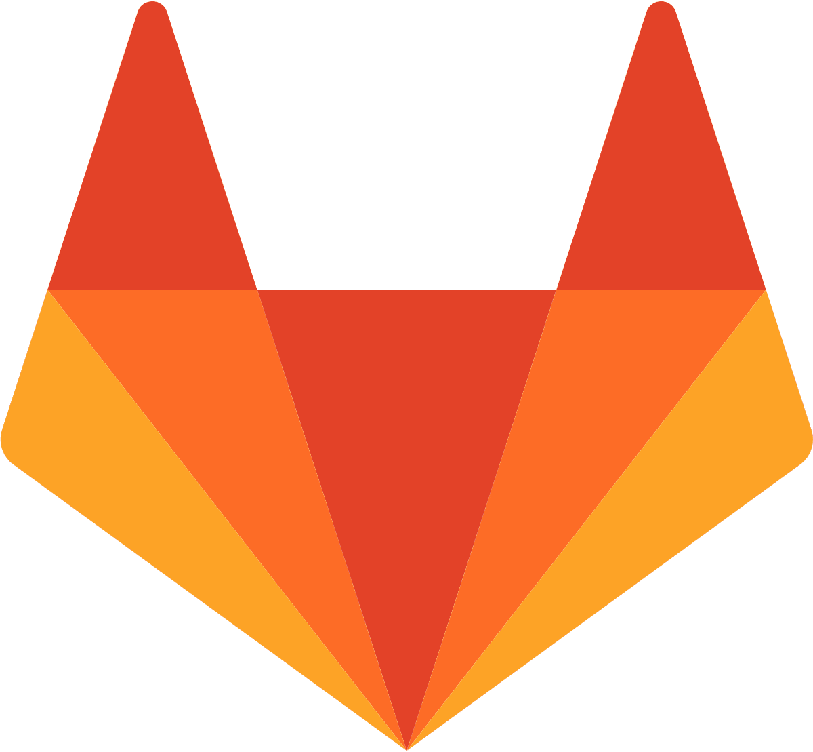

Projet Flatcraft
Minecraft en 2D
Technologies utilisées lors du projet
Logiciel utilisé lors du projet
Présentation du projet:
Dans le cadre du BUT Informatique, nous avons réalisé un projet se nommant Flatcraft. Il s'agit de réaliser le fameux jeu Minecraft en 2D par groupe de 4 personnes.
{kind=link}
L'objectif du projet:
L'objectif de ce projet était de pratiquer le Java ainsi que la gestion de projet avec GitLab. Ce projet avait également un double objectif car il nous a permis de mettre en œuvre ce que l'on a vu en cours magistraux, les patrons de conception. Suivant les fonctionnalités à implémenter dans le jeu, nous avons dû réaliser plusieurs patrons de conception tels qu'un décorateur, singleton, état, etc...
Résultats obtenus:
Lors du lancement classique du projet, nous arrivons sur la map de base qui s'appelle "l'overworld". Celle-ci est composée de plusieurs arbres ainsi que d'un terril formé de blocs de charbon. Dans le sous-sol, on y retrouve de la terre et un peu plus bas de la pierre, comme dans le vrai jeu. Il y a également quelques minerais comme du diamant, du charbon, de l'or et de l'argent.
Image montrant l'overworld
Nous avons également réalisé quelques maps qui existent dans Minecraft, le "Nether" et "l'Ender" qui possède des propriétés à elles seules.
Image montrant le Nether
Image montrant l'Ender
Pour finir, une map spéciale a été créé pour l'occasion. Elle est remplie de pierre.
Image montrant la map spéciale
Difficultés rencontrées:
Lors de ce projet, notre principale difficulté était de réaliser des grosses parties telles que l'inventaire qui est relié à la table de craft (Table permettant de créer des objets). En ajoutant que l'implémentation des patrons de conception n'était pas simple non plus. Il fallait bien choisir le patron de conception adapté et l'implémenter correctement sous peine de ne pas être efficace voire de ne pas marcher du tout.